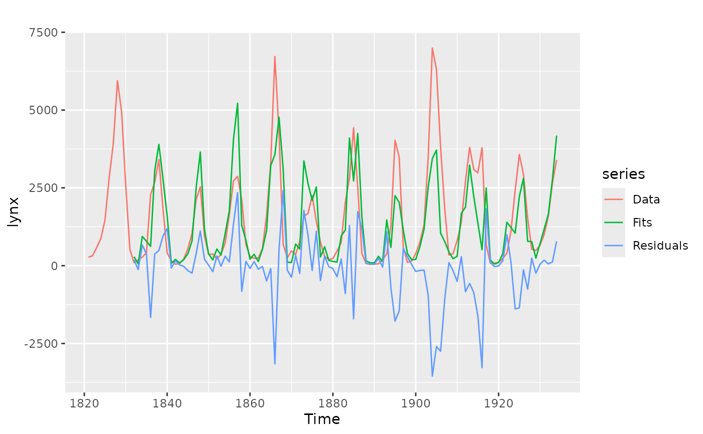
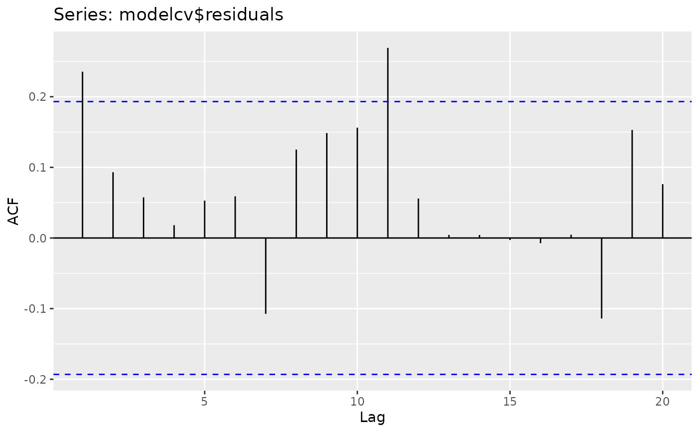

CVar computes the errors obtained by applying an autoregressive
modelling function to subsets of the time series y using k-fold
cross-validation as described in Bergmeir, Hyndman and Koo (2015). It also
applies a Ljung-Box test to the residuals. If this test is significant
(see returned pvalue), there is serial correlation in the residuals and the
model can be considered to be underfitting the data. In this case, the
cross-validated errors can underestimate the generalization error and should
not be used.
Arguments
- y
Univariate time series
- k
Number of folds to use for cross-validation.
- FUN
Function to fit an autoregressive model. Currently, it only works with the
nnetarfunction.- cvtrace
Provide progress information.
- blocked
choose folds randomly or as blocks?
- LBlags
lags for the Ljung-Box test, defaults to 24, for yearly series can be set to 20
- ...
Other arguments are passed to
FUN.
Value
A list containing information about the model and accuracy for each fold, plus other summary information computed across folds.
References
Bergmeir, C., Hyndman, R.J., Koo, B. (2018) A note on the validity of cross-validation for evaluating time series prediction. Computational Statistics & Data Analysis, 120, 70-83. https://robjhyndman.com/publications/cv-time-series/.
Examples
modelcv <- CVar(lynx, k=5, lambda=0.15)
print(modelcv)
#> Series: lynx
#> Call: CVar(y = lynx, k = 5, lambda = 0.15)
#>
#> 5-fold cross-validation
#> Mean SD
#> ME -74.79592506 151.1677630
#> RMSE 962.60117172 303.3019510
#> MAE 629.76455751 244.7951183
#> MPE -21.33908266 18.3042034
#> MAPE 57.54709158 11.4579284
#> ACF1 0.04659258 0.2375376
#> Theil's U 0.90516045 0.1357820
#>
#> p-value of Ljung-Box test of residuals is 0.6799646
#> if this value is significant (<0.05),
#> the result of the cross-validation should not be used
#> as the model is underfitting the data.
print(modelcv$fold1)
#> $model
#> Series: y
#> Model: NNAR(11,6)
#> Call: FUN(y = y, lambda = 0.15, subset = trainset)
#>
#> Average of 20 networks, each of which is
#> a 11-6-1 network with 79 weights
#> options were - linear output units
#>
#> sigma^2 estimated as 0.07693
#>
#> $accuracy
#> ME RMSE MAE MPE MAPE ACF1 Theil's U
#> Test set -333.3952 1409.127 1013.147 -17.25625 70.27146 0.06662946 0.8357664
#>
#> $testfit
#> Time Series:
#> Start = 1821
#> End = 1934
#> Frequency = 1
#> [1] NA NA NA NA NA NA
#> [7] NA NA NA NA NA 104.65817
#> [13] 173.44043 752.76556 405.97863 2224.83243 2779.82636 3268.33933
#> [19] 1959.55051 417.77281 149.70021 218.90499 68.17231 208.79876
#> [25] 544.60069 1033.91945 2232.93520 2612.65603 1155.94097 350.18220
#> [31] 199.08984 247.29476 357.41839 1065.37219 917.70866 2739.80389
#> [37] 2825.99560 2160.63618 694.88003 303.36853 245.22898 252.59229
#> [43] 542.83078 1614.40930 3222.78658 3864.20369 4217.25655 1607.48705
#> [49] 255.17515 434.55791 568.98988 781.45769 3562.53685 1696.32395
#> [55] 2301.24773 1484.43390 749.37783 305.26772 197.23118 139.33273
#> [61] 453.18515 741.31034 660.53545 3104.46476 1971.17253 4393.68784
#> [67] 387.91326 152.51189 41.43826 51.18344 64.99945 188.03146
#> [73] 1144.16888 1293.39869 3864.41404 3429.22679 601.36608 105.90166
#> [79] 152.30387 367.27029 753.41503 1324.96288 2756.21010 6378.04599
#> [85] 2730.69499 3729.10591 1776.04216 372.81597 363.37077 790.43690
#> [91] 1385.38415 1730.30314 3690.49690 3024.37591 1806.05361 3642.05430
#> [97] 691.72507 82.43523 83.06446 235.03039 231.99964 401.77718
#> [103] 1122.17652 2424.89979 3561.28222 2929.88752 1506.86354 499.10817
#> [109] 458.54360 667.56516 1014.88628 1580.84378 2732.75274 3365.86164
#>
#> $testset
#> [1] 6 9 14 22 29 31 34 35 46 48 51 53 60 63 65 66 68 73 83
#> [20] 85 92 95 100
#>
library(ggplot2)
autoplot(lynx, series="Data") +
autolayer(modelcv$testfit, series="Fits") +
autolayer(modelcv$residuals, series="Residuals")
#> Warning: Removed 11 rows containing missing values (`geom_line()`).
#> Warning: Removed 11 rows containing missing values (`geom_line()`).

ggAcf(modelcv$residuals)
